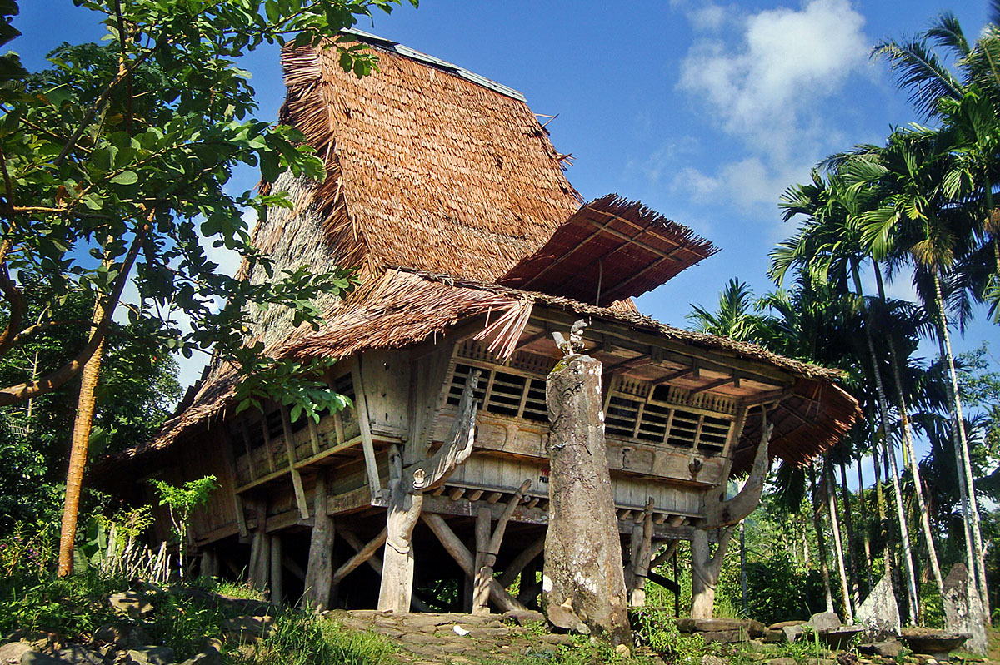
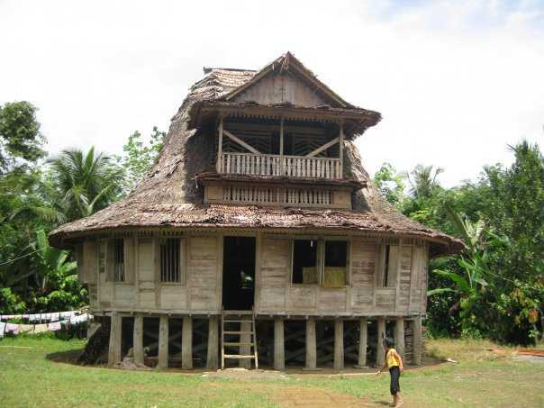

Omo Niha (atau Omo hada Niha) adalah suatu bentuk rumah panggung tradisional orang Nias, yaitu untuk masyarakat pada umumnya. Selain itu terdapat pula rumah adat Nias jenis lain, yaitu Omo Sebua, yang merupakan rumah tempat kediaman para kepala negeri (tuhenöri), kepala desa (salawa), atau kaum bangsawan
|  |  |
Omo Niha adalah rumah adat dari suku Nias, yang terletak di pulau Nias, Sumatera Utara. Bentuk Omo Niha sangat khas dan mencerminkan kekayaan budaya serta arsitektur tradisional masyarakat Nias. Rumah ini umumnya dibangun sebagai struktur panggung dengan atap yang melengkung tajam ke atas, memberikan kesan megah dan unik. Struktur rumah ini biasanya terbuat dari kayu dengan tiang penyangga yang tinggi, memungkinkan ruang di bawah rumah untuk digunakan sebagai tempat penyimpanan atau aktivitas sosial.
Sejarah Omo Niha mencerminkan tradisi dan kehidupan masyarakat Nias yang telah berlangsung sejak zaman dahulu. Rumah ini bukan hanya berfungsi sebagai tempat tinggal, tetapi juga sebagai simbol status sosial dan kekuatan kepala keluarga. Dalam masyarakat Nias, Omo Niha sering kali dibangun dengan melibatkan seluruh komunitas, dan proses pembangunannya bisa memakan waktu lama serta melibatkan upacara adat tertentu. Rumah ini juga mencerminkan nilai-nilai budaya yang penting bagi masyarakat Nias, termasuk kepercayaan dan adat istiadat mereka.
Ciri khas Omo Niha meliputi atapnya yang melengkung tajam dan sering kali dihiasi dengan ukiran yang kompleks, mencerminkan kekayaan seni ukir masyarakat Nias. Bagian atas atap biasanya memiliki bentuk seperti tanduk atau jari-jari yang melengkung ke atas, menambah kesan estetis dan simbolis dari rumah tersebut. Tiang-tiang kayu yang digunakan untuk menopang rumah juga sering dihiasi dengan ukiran atau patung, yang melambangkan status sosial atau tokoh-tokoh penting dalam komunitas. Selain itu, Omo Niha biasanya memiliki beberapa ruang terbagi yang dikhususkan untuk keluarga dan kegiatan sosial, mencerminkan struktur sosial dan kehidupan komunitas Nias.